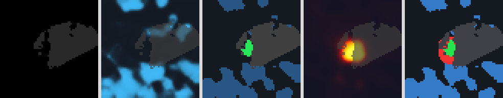
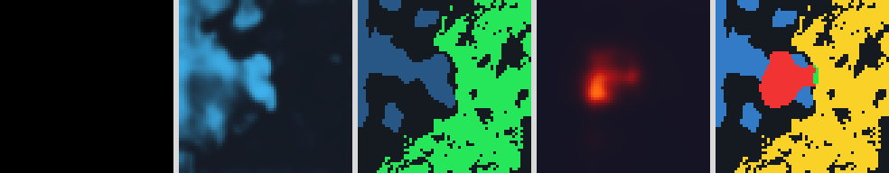

Burn Scar
Prediction Model
Predicción del avance de incendios forestales y plataforma web de visualización.
¿Dónde ya ardió vs. hacia dónde avanza el fuego?
Detectar la cicatriz
Mirar una foto satelital y marcar dónde ya se quemó. Eso describe el pasado.
Predecir el avance
Dado el estado actual del incendio, estimar dónde es probable que arda en los próximos días.
- Imágenes satelitales (Sentinel-3, cada ~2 días).
- Mapa de terreno y vegetación (relieve + tipo de suelo).
- Horizonte: cuántos días a futuro se pregunta.
Una imagen satelital muestra el terreno, pero no ve el viento ni la humedad. En v1 probamos cuánto se puede predecir solo con imagen + terreno.
Por qué 300 m y cómo evitamos "hacer trampa"
- Un incendio típico dura ~4 días.
- Satélites de mucho detalle (10 m) pasan cada 5–6 días → no alcanzan a ver el avance.
- Sentinel-3 (300 m) pasa cada ~2 días → captura 2 a 3 fotos por incendio.
Medimos contra mapas hechos por analistas humanos (Copernicus CEMS), nunca contra algoritmos del mismo satélite.
Arquitectura compacta: secuencia + terreno → mapa
~780 mil parámetros: evita memorizar cuando hay pocos incendios.
Un modelo auxiliar congelado (TMB-S3) estima la cicatriz actual sin ayuda manual.
Validación cruzada (5 grupos) y umbral fijado antes de mirar el test final.
El modelo duplica el desempeño del baseline geométrico
La barra verde (14,7%) mide solo el avance nuevo real: es la métrica más exigente y honesta.
- 2× mejor que expandir el borde a ciegas.
- La variante Tversky reduce falsas alarmas (39,5% precisión).
- Elegir bien el umbral de alerta impacta tanto como el modelo.
El modelo en acción: acierto vs. fallo honesto


Llevar las predicciones a un mapa interactivo
- El modelo genera matrices de probabilidad difíciles de leer en consola.
- El frontend permite explorar incendios en un mapa sin tocar código.
- Facilita comparar escenarios cambiando horizonte y sensibilidad.
- Framework web: [ej. React / Vue / Next.js]
- Motor de mapas: [ej. Leaflet / Mapbox / OpenLayers]
- Conexión API: [ej. FastAPI / REST JSON / GeoJSON]
- Estilos / UI: [ej. TailwindCSS / CSS Modules]
Cómo se conecta la interfaz con el modelo
Elegir evento → configurar horizonte → visualizar predicción.
Permite activar/desactivar cicatriz inicial y mapa de probabilidad.
Ajustar el umbral muestra cómo cambia la zona de alerta.
Vista principal y configuración de parámetros
Pantalla inicial con el mapa base y el listado/selector de incendios.
Controles para elegir horizonte (días), umbral y capas visibles.
Cómo se interpreta la predicción en pantalla
Mapa con la capa de predicción activa, leyenda de riesgo y métricas del evento.
- Zona ya quemada como referencia inicial.
- Mapa de probabilidad de avance futuro.
- Control de umbral para decidir qué se marca como alerta.
- [Completar Front]: métricas o exportación visible.
Demo en vivo: del entrenamiento al mapa
- Verificación de resultados y comparación con baselines en consola.
- Curvas de entrenamiento en TensorBoard.
- Seleccionar un incendio real en el mapa.
- Cambiar el horizonte de días y el umbral.
- Inspeccionar la predicción generada.


Lo que logramos y hacia dónde sigue
- Pipeline completo con datos satelitales abiertos y sin fuga de datos.
- El modelo duplica al baseline en crecimiento real (14,7% vs 7,3%).
- Interfaz web funcional para visualizar predicciones en mapa.
- Incorporar viento y meteorología (factor clave del fuego).
- Ampliar la base con más incendios históricos (+66 series).
- Sumar más herramientas de comparación en el frontend.